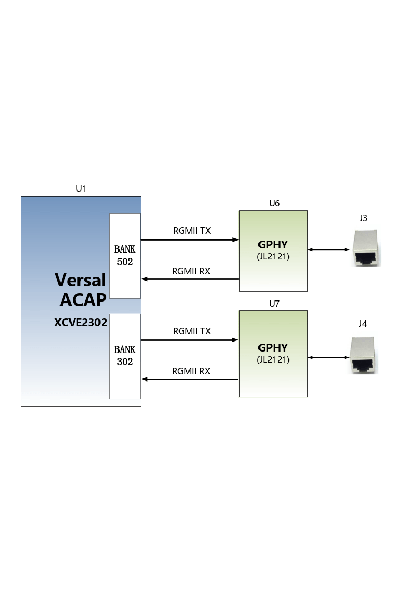
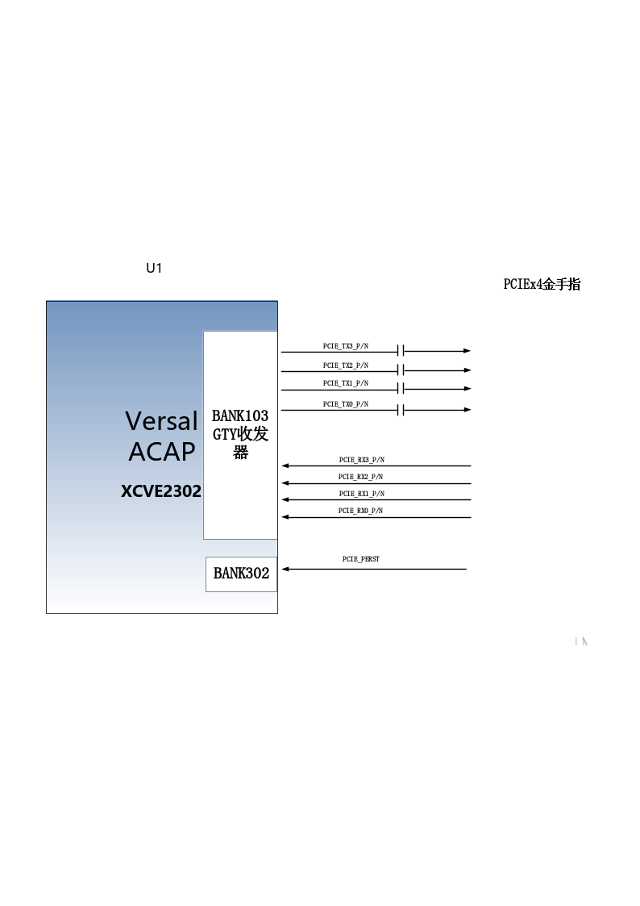
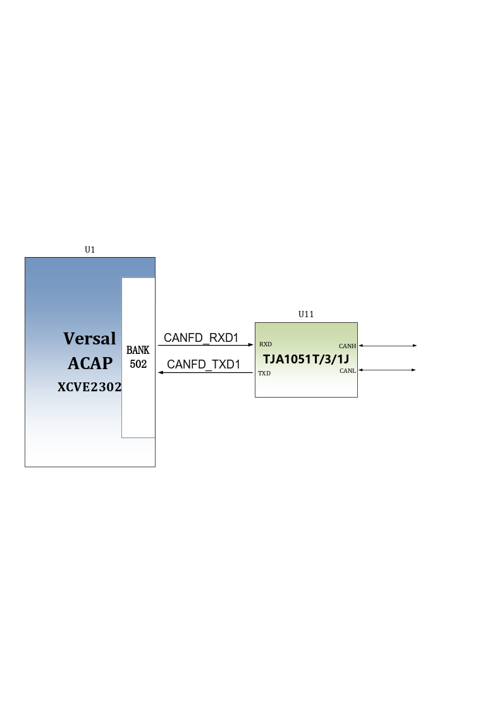
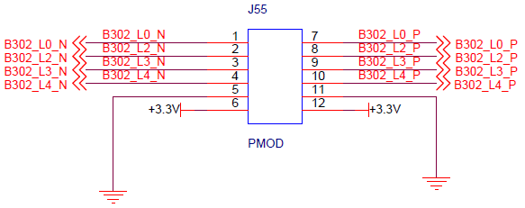

expanding board#
Introduction#
Through the previous function introduction, we can understand the functions of the expansion board
2-way Gigabit Ethernet RJ-45 interface
PCIe 3.0 x 4 interface
2-way SFP+ high-speed optical fiber interface
1-way USB Uart debugging interface
1 USB HOST interface
1-way LVDS display interface
2-way MIPI camera interface
1-way Micro SD card holder
JTAG debug port
1 way temperature sensor
1 channel EEPROM
1 channel CANFD communication interface
1 way 22-pin expansion port
Gigabit Ethernet interface#
There are two Gigabit Ethernet interfaces on the VD100 expansion board, one is connected to the PS end, and the other is connected to the PL end. Provide users with network communication services through Jinglue Semiconductor’s industrial-grade Ethernet GPH Y chip ( JL2121 -N040I ). The JL2121 chip supports 10/100/1000 Mbps network transmission rate and communicates data with the MAC layer of the FPGA through the R GMII interface. JL2121D supports MDI/MDX adaptation, various speed adaptation, Master/ Slave adaptation, and supports MDIO bus for PHY register management.
JL2121 is powered on, it will detect the level status of some specific IOs to determine its own working mode . Table 3-2-1 Describes the default setting information of the GPHY chip after power-on.
Configure pins |
illustrate |
configuration value |
RXD3_ADR0 RXC_ADR1 RXCTL_ADR2 |
PHY address for MDIO/MDC mode |
PHY Address is 0 01 |
RXD1_TXDLY |
TX clock 2ns delay |
delay |
RXD0_RXDLY |
RX clock 2ns delay |
delay |
Table 3-2-1 PHY chip default configuration values
When the network is connected to Gigabit Ethernet, the data transmission of FPGA and PHY chip JL2121 is communicated through the RGMII bus. The transmission clock is 125Mhz, and the data is sampled on the rising edge and downsampling of the clock.
When the network is connected to 100M Ethernet, the data transmission of FPGA and PHY chip JL2121 is communicated through RMII bus, and the transmission clock is 25Mhz. Data is sampled on the rising and falling edges of the clock.
The design diagram of Gigabit Ethernet is shown in Figure 3-2-1:
Figure 3-2-1 Gigabit Ethernet interface design diagram
The Gigabit Ethernet pin assignments are as follows:
Signal name |
Pin name |
Pin number |
Remark |
PHY1_TXCK |
LPD_MIO0 |
T1 |
Ethernet 1RGMII transmit clock |
PHY1_TXD0 |
LPD_MIO1 |
U1 |
Ethernet 1 sends data bit0 |
PHY1_TXD1 |
LPD_MIO2 |
W1 |
Ethernet 1 sends data bit1 |
PHY1_TXD2 |
LPD_MIO3 |
Y1 |
Ethernet 1 sends data bit2 |
PHY1_TXD3 |
LPD_MIO4 |
Y2 |
Ethernet 1 sends data bit3 |
PHY1_TXCTL |
LPD_MIO5 |
W2 |
Ethernet 1 sends enable signal |
PHY1_RXCK |
LPD_MIO6 |
V2 |
Ethernet 1RGMII receive clock |
PHY1_RXD0 |
LPD_MIO7 |
U2 |
Ethernet 1 receives data Bit0 |
PHY1_RXD1 |
LPD_MIO8 |
T3 |
Ethernet 1 receives data Bit1 |
PHY1_RXD2 |
LPD_MIO9 |
U3 |
Ethernet 1 receives data Bit2 |
PHY1_RXD3 |
LPD_MIO10 |
V3 |
Ethernet 1 receives data Bit3 |
PHY1_RXCTL |
LPD_MIO11 |
Y3 |
Ethernet 1 receives data valid signal |
PHY1_MDIO |
PS_MIO51 |
AA10 |
Ethernet 1MDIO management data |
PHY1_MDC |
PS_MIO50 |
AB10 |
Ethernet 1MDIO management clock |
PHY1_RESET |
LPD_MIO15 |
T5 |
Ethernet 1 reset signal |
PHY2_TXCK |
B302_L9_N |
A13 |
Ethernet 2 RGMII transmit clock |
PHY2_TXD0 |
B302_L8_N |
A11 |
Ethernet 2 sends data bit0 |
PHY2_TXD1 |
B302_L8_P |
B11 |
Ethernet 2 sends data bit1 |
PHY2_TXD2 |
B302_L7_N |
A10 |
Ethernet 2 sends data bit2 |
PHY2_TXD3 |
B302_L7_P |
B10 |
Ethernet 2 sends data bit3 |
PHY2_TXCTL |
B302_L9_P |
B12 |
Ethernet 2 sends enable signal |
PHY2_RXCK |
B302_L6_P |
D10 |
Ethernet 2 RGMII receive clock |
PHY2_RXD0 |
B302_L5_N |
C12 |
Ethernet 2 receives data Bit0 |
PHY2_RXD1 |
B302_L5_P |
D11 |
Ethernet 2 receives data Bit1 |
PHY2_RXD2 |
B302_L10_N |
A14 |
Ethernet 2 receive data Bit2 |
PHY2_RXD3 |
B302_L10_P |
B13 |
Ethernet 2 receive data Bit3 |
PHY2_RXCTL |
B302_L6_N |
C10 |
Ethernet 2 receives data valid signal |
PHY2_MDIO |
B302_L1_P |
C14 |
Ethernet 2 MDIO management data |
PHY2_MDC |
B302_L1_N |
C13 |
Ethernet 2 MDIO management clock |
PHY2_RESET |
B703_L12_P |
H23 |
Ethernet 2 reset signal |
PCIe3.0 X4 interface#
The VD100 expansion board provides an industrial-grade high-speed data transmission PCIe 3.0 x4 interface. The dimensions of the PCIE card comply with the electrical specifications of the standard PCIe card and can be used directly in the x4 PCIe slot of an ordinary PC.
The transceiver signals of the PCIe interface are directly connected to the GTY transceiver of the FPGA. The four-channel TX signal and RX signal are connected to the FPGA in a differential signal mode. The single-channel communication rate can be as high as 8 Gbit bandwidth. The PCIe reference clock is provided to the development board from the PCIe slot of the PC, and the reference clock frequency is 100Mhz.
The design schematic diagram of the PCIe interface of the development board is shown in Figure 3-3-1 below, in which the TX transmission signal and the reference clock CLK signal are connected in AC coupling mode.
Figure 3-3-1 PCIe x4 design diagram
The PCIe x4 interface FPGA pin assignment is as follows:
network name |
FPGA pin |
Remark |
PCIE_RX0_P |
P2 |
PCIE channel 0 data receptionPositive |
PCIE_RX0_N |
P1 |
PCIE channel 0 data reception Negative |
PCIE_RX1_P |
M2 |
PCIE channel 1 data receptionPositive |
PCIE_RX1_N |
M1 |
PCIE channel 1 data reception Negative |
PCIE_RX2_P |
K2 |
PCIE channel 2 data receptionPositive |
PCIE_RX2_N |
K1 |
PCIE channel 2 data reception Negative |
PCIE_RX3_P |
H2 |
PCIE channel 3 data receptionPositive |
PCIE_RX3_N |
H1 |
PCIE channel 3 data reception Negative |
PCIE_TX0_P |
N5 |
PCIE channel 0 data transmission Positive |
PCIE_TX0_N |
N4 |
PCIE channel 0 data transmission Negative |
PCIE_TX1_P |
L5 |
PCIE channel 1 data transmission Positive |
PCIE_TX1_N |
L4 |
PCIE channel 1 data transmission Negative |
PCIE_TX2_P |
J5 |
PCIE channel 2 data transmission Positive |
PCIE_TX2_N |
J4 |
PCIE channel 2 data transmission Negative |
PCIE_TX3_P |
G5 |
PCIE channel 3 data transmission Positive |
PCIE_TX3_N |
G4 |
PCIE channel 3 data transmission Negative |
PCIE_CLK_P |
M7 |
PCIE reference clock Positive |
PCIE_CLK_N |
M6 |
PCIE reference clock Negative |
PCIE_PERST |
B13 |
PCIE reset signal |
Optical fiber interface#
There are 2 SFP+ optical fiber interfaces on the VD100 development board. Users can purchase SFP optical modules (1.25G, 2.5G, 10G optical modules on the market) and insert them into these two optical fiber interfaces for optical fiber data communication. The 2 optical fiber interfaces are connected to the 2 RX/TX of the GTY transceiver of FPGA’s BANK104 respectively. The TX signal and the RX signal are connected to the FPGA and the optical module through DC blocking capacitors in the form of differential signals. Each TX transmits and RX receives data. Rates up to 10Gb/s. The reference clock of BANK104’s GTY transceiver is provided by a 156.25Mhz differential crystal oscillator.
The schematic diagram of FPGA and SFP optical fiber design is shown in Figure 3-4-1 below:

Figure 3-4-1 Optical fiber design diagram
The first optical fiber interface FPGA pin assignment is as follows:
network name |
FPGA pin |
Remark |
SFP 1_TX_P |
E5 |
SFP optical module data sendingPositive |
SFP 1_TX_N |
E4 |
SFP optical module data sending Negative |
SFP 1_R X_P |
F2 |
SFP optical module data receptionPositive |
SFP 1_R X_N |
F1 |
SFP optical module data reception Negative |
SFP 1_TX_DIS |
D26 |
SFP optical module light emission is disabled, low effective |
SFP1_SCL |
D21 |
I2C clock signal |
SFP 1_SDA |
D20 |
I2C data signal |
The second optical fiber interface FPGA pin assignment is as follows:
network name |
FPGA pin |
Remark |
SFP 2_TX_P |
D8 |
SFP optical module data sendingPositive |
SFP 2_TX_N |
D7 |
SFP optical module data sending Negative |
SFP 2_R X_P |
D2 |
SFP optical module data receptionPositive |
SFP 2_R X_N |
D1 |
SFP optical module data reception Negative |
SFP 2_TX_DIS |
D25 |
SFP optical module light emission is disabled, low effective |
SFP_CLK_N |
H6 |
FPGA input clock Negative |
SFP_CLK_P |
H7 |
FPGA input clock Positive |
USB to serial port#
The VD100 expansion board is equipped with a Uart-to-USB interface connected to the PS side. The conversion chip uses the USB- UAR chip of Silicon Labs CP210 2 GM . The USB interface adopts the MINI USB interface. You can use a USB cable to connect it to the USB port of the PC for serial data communication.
The schematic diagram of USB Uart circuit design is shown in Figure
3-5-1 
Figure 3-5-1 USB to serial port schematic diagram
FPGA pin assignment for UART to serial port:
Signal name |
FPGA pin name |
FPGA pin number |
Remark |
PS_UART0_RX |
LPD_MIO16 |
U5 |
Uart data input |
PS_UART0_TX |
LPD_MIO17 |
V5 |
Uart data output |
USB2.0 interface#
The VD100 expansion board has a USB2.0 interface and supports HOST working mode. USB2.0 connects to the external USB3320C chip through the ULPI interface to achieve high-speed USB2.0 data communication.
The USB interface is a flat USB interface (USB Type A) , which facilitates users to connect different USB Slave peripherals (such as USB mouse, keyboard or U disk) at the same time. The schematic diagram of USB2.0 connection is shown in 3-6-1:

3-6-1 USB3.0 interface diagram
USB interface pin assignment:
Signal name |
Pin name |
Pin number |
Remark |
USB_DATA0 |
PS_MIO14 |
AC3 |
USB2.0 Data Bit0 |
USB_DATA1 |
PS_MIO15 |
AE3 |
USB2.0 Data Bit1 |
USB_DATA2 |
PS_MIO16 |
AF3 |
USB2.0 Data Bit2 |
USB_DATA3 |
PS_MIO17 |
AG3 |
USB2.0 Data Bit3 |
USB_DATA4 |
PS_MIO19 |
AH4 |
USB2.0 Data Bit4 |
USB_DATA5 |
PS_MIO20 |
AF4 |
USB2.0 Data Bit5 |
USB_DATA6 |
PS_MIO21 |
AE4 |
USB2.0 Data Bit6 |
USB_DATA7 |
PS_MIO22 |
AD4 |
USB2.0 Data Bit7 |
USB_STP |
PS_MIO24 |
AA4 |
USB2.0 stop signal |
USB_DIR |
PS_MIO23 |
AC4 |
USB2.0 data direction signal |
USB_CLK |
PS_MIO18 |
AH3 |
USB2.0 clock signal |
USB_NXT |
PS_MIO25 |
Y4 |
USB2.0 next data signal |
USB_RESET_N |
PS_MIO13 |
AB3 |
USB2.0 reset signal |
LVDS display interface#
The expansion board contains an LVDS display interface, which can be
used to connect our 7-inch display module (AN7000). The LVDS interface
is a 40PIN FPC connector with 4 pairs of LVDS data, 1 pair of clocks,
and other control signals connected to the differential IO pins of
BANK703 through a level conversion chip. The level standard is 1.5V.

Figure 3-7-1 LVDS interface design schematic diagram
LVDS interface pin assignment
Signal name |
Pin name |
Pin number |
Remark |
LVDS_CLK- |
B703_L17_N |
A24 |
LVDS screen input clock negative |
LVDS_CLK+ |
B703_L17_P |
A23 |
LVDS screen input clock is positive |
LVDS_D0- |
B703_L13_N |
G23 |
The data input on the LVDS screen DATA0 is negative |
LVDS_D0+ |
B703_L13_P |
F22 |
The data input on the LVDS screen DATA0 is positive |
LVDS_D1- |
B703_L22_N |
A21 |
The data input on the LVDS screen DATA1 is negative |
LVDS_D1+ |
B703_L22_P |
A20 |
The data input on the LVDS screen DATA1 is positive |
LVDS_D2- |
B703_L23_N |
B22 |
Data input on the LVDS screen DATA2 negative |
LVDS_D2+ |
B703_L23_P |
C22 |
The data input on the LVDS screen DATA2 is positive |
LVDS_D3- |
B703_L10_N |
A26 |
Data input on the LVDS screen DATA3 negative |
LVDS_D3+ |
B703_L10_P |
A25 |
The data input on the LVDS screen DATA3 is positive |
FPGA_LCD_SDI |
B703_L11_N |
B27 |
LCD screen serial interface address and SPI data input |
FPGA_LCD_CSB |
B703_L11_P |
B26 |
LCD screen serial interface chip SPl chip select signal |
FPGA_LCD_SCL |
B703_L3_N |
E28 |
LCD screen serial interface SPI clock |
FPGA_LCD_SDO |
B703_L9_N |
B25 |
LCD screen serial interface SPI data output |
FPGA_LCD_RESET |
B703_L3_P |
E27 |
LCD screen reset signal |
FPGA_LCD_STBYB |
B703_L25_N |
F25 |
LCD screen mode setting signal |
FPGA_BANKLCD_SDA |
B703_L12_N |
H24 |
Backlight I2C data |
FPGA_BANKLCD_SCL |
B703_L14_P |
E22 |
Backlight I2C clock |
FPGA_BANKLCD_INT |
B703_L9_P |
C25 |
Backlight failure interrupt signal |
FPGA_BANKLCD_EN |
B703_L25_P |
E24 |
Backlight enable signal |
FPGA_BANKLCD_PWM |
B703_L15_N |
C24 |
Backlight brightness adjustment signal |
FPGA_BANKLCD_SYNC |
B703_L15_P |
D24 |
Backlight sync boost input |
LVDS_CLK_N |
B703_L24_N |
F24 |
FPGA input clock negative |
LVDS_CLK_P |
B703_L24_P |
F23 |
FPGA input clock is positive |
MIPI interface#
The VD100 expansion board contains 2 MIPI 4 Lane camera interfaces, which can be used to connect our MIPI OS05A10 camera module (AN5010). The MIPI interface is a 20PIN FPC connector, which is connected to the differential IO pins of BANK702 for 4 LANE data and 1 pair of clocks. The level standard is 1.2V; other control signals are connected to the IO of BANK703 through level conversion. on, the level standard is 1.5V.

Figure 3-8-1 MIPI interface design schematic diagram
MIPI interface pin assignments
Signal name |
Pin name |
Pin number |
Remark |
MIPI1_CLK_N |
B702_L12_N |
T24 |
MIPI1 input clock negative |
MIPI1_CLK_P |
B702_L12_P |
U23 |
MIPI1 input clock positive |
MIPI1_LAN0_N |
B702_L13_N |
R24 |
MIPI1 input data LANE0 negative |
MIPI1_LAN0_P |
B702_L13_P |
T23 |
MIPI1 input data LANE0 positive |
MIPI1_LAN1_N |
B702_L14_N |
P24 |
MIPI1 input data LANE1 negative |
MIPI1_LAN1_P |
B702_L14_P |
R23 |
MIPI1 input data LANE1 positive |
MIPI1_LAN2_N |
B702_L16_N |
K24 |
MIPI1 input data LANE2 negative |
MIPI1_LAN2_P |
B702_L16_P |
L23 |
MIPI1 input data LANE2 positive |
MIPI1_LAN3_N |
B702_L15_N |
M23 |
MIPI1 input data LANE3 negative |
MIPI1_LAN3_P |
B702_L15_P |
M22 |
MIPI1 input data LANE3 positive |
MIPI1_SDA |
B703_L2_N |
F28 |
I2C data for MIPI1 camera |
MIPI1_SCL |
B703_L2_P |
G27 |
I2C clock for MIPI1 camera |
MIPI1_GPIO |
B703_L7_N |
G26 |
GPIO control of MIPI1 camera |
MIPI1_CLK |
B703_L7_P |
G25 |
MIPI1 camera clock input |
MIPI2_CLK_N |
B702_L18_N |
U22 |
MIPI2 input clock negative |
MIPI2_CLK_P |
B702_L18_P |
V21 |
MIPI2 input clock positive |
MIPI2_LAN0_N |
B702_L19_N |
R22 |
MIPI2 input data LANE0 negative |
MIPI2_LAN0_P |
B702_L19_P |
T21 |
MIPI2 input data LANE0 is positive |
MIPI2_LAN1_N |
B702_L20_N |
P22 |
MIPI2 input data LANE1 negative |
MIPI2_LAN1_P |
B702_L20_P |
R21 |
MIPI2 input data LANE1 positive |
MIPI2_LAN2_N |
B702_L21_N |
M21 |
MIPI2 input data LANE2 negative |
MIPI2_LAN2_P |
B702_L21_P |
N21 |
MIPI2 input data LANE2 positive |
MIPI2_LAN3_N |
B702_L22_N |
L22 |
MIPI2 input data LANE3 negative |
MIPI2_LAN3_P |
B702_L22_P |
K21 |
MIPI2 input data LANE3 positive |
MIPI2_SDA |
B703_L4_N |
C28 |
I2C data for MIPI2 camera |
MIPI2_SCL |
B703_L4_P |
D27 |
I2C clock for MIPI2 camera |
MIPI2_GPIO |
B703_L0_N |
H28 |
GPIO control of MIPI2 camera |
MIPI2_CLK |
B703_L0_P |
J27 |
MIPI2 camera clock input |
SD card#
The VD100 expansion board contains a Micro-type SD card interface to provide users with access to the SD card memory, which is used to store the BOOT program of the XCVE2302 chip and the Linux operating system kernel . file system and other user data files.
The SDIO signal is connected to the IO signal of PS BANK501 of XCVE2302 , because the VCCIO of 501 is set to 1.8V, but the data level of the SD card is 3.3V, we connect it here through the TXS02612 level converter . The schematic diagram of the XCVE2302 PS and SD card connector is shown in Figure 3-9-1 .

Figure 3-9 - 1 SD card connection diagram
SD card slot pin assignment
Signal name |
Pin name |
Pin number |
Remark |
SD_CLK |
PS_MIO26 |
AA5 |
SD clock signal |
SD_CD |
PS_MIO28 |
AC5 |
SD card detection signal |
SD_CMD |
PS_MIO29 |
AD5 |
SD command signal |
SD_D0 |
PS_MIO30 |
AE6 |
SD dataData0 |
SD_D1 |
PS_MIO31 |
AD6 |
SD dataData1 |
SD_D2 |
PS_MIO32 |
AB6 |
SD dataData2 |
SD_D3 |
PS_MIO33 |
AA6 |
SD dataData3 |
EEPROM 24LC04 and temperature sensor#
The VD100 development board is equipped with an EEPROM, model 24LC04, capacity: 4Kbit (2*256*8bit), which is connected to the PS side for communication through the IIC bus. In addition, the board also has a high-precision, low-power consumption, digital temperature sensor chip, model LM75 from ON Semiconductor. The temperature accuracy of the LM75 chip is 0.5 degrees. The EEPROM and temperature sensor are mounted to the Versal ACAP’s Bank501 MIO via the I2C bus. Figure 3-10-1 is the schematic diagram of EEPROM and temperature sensor

Figure 3-10-1 Schematic diagram of EEPROM and sensor
The EEPROM communication pin assignment is as follows:
Signal name |
Pin name |
Pin number |
Remark |
PS_IIC1_SCL |
PS_MIO34 |
AB7 |
I2C clock signal |
PS_IIC1_SDA |
PS_MIO35 |
AC7 |
I2C data signal |
JTAG interface#
The development board reserves a JTAG interface for downloading FPGA programs or firmware programs to FLASH. In order to prevent damage to the FPGA chip caused by hot plugging and unplugging, we added a protection diode to the JTAG signal to ensure that the signal voltage is within the acceptable range of the FPGA and avoid damage to the FPGA.

Figure 3-8-1 JTAG interface schematic diagram
Be careful not to hot-swap when plugging or unplugging the JTAG line.
CANFD communication interface#
The VD100 expansion board has 1 CAN/CANFD communication interface, which is connected to the MIO interface of BANK502 on the PS system side. The CANFD transceiver chip uses the TJA1051T/3/1J chip of Zhienpu Company to provide user CAN communication services.
Figure 3-12-1 is the connection diagram of the CAN transceiver chip on the PS side.
Figure 3-12-1 Connection diagram of PS-side CAN transceiver chip
The CAN communication pin assignment is as follows:
Signal name |
Pin name |
Pin number |
Remark |
CANFD_TXD1 |
LPD_MIO23 |
Y7 |
CAN1 sending end |
CANFD_RXD1 |
LPD_MIO22 |
T6 |
CAN1 receiving end |
PMOD expansion port#
The expansion board reserves a 12PIN 2.54mm standard spacing PMOD expansion port J55 for connecting external modules or devices. The expansion port has 2 channels of 3.3V power supply, 2 channels of ground, and 8 channels of IO port. The IO level standard is 3.3V. Do not connect it directly to the IO of a 5V device to avoid burning out the FPGA. If you want to connect the IO of a 5V device, you need to connect a level conversion chip.
The circuit of the expansion port (55) is shown in Figure 3-13-1 below
Figure 3-13-1 Schematic diagram of expansion port J55
J55 expansion port FPGA pin assignment
J55 pin number |
FPGA Pin name |
FPGA Pin number |
J55 pin number |
FPGA Pin name |
FPGA Pin number |
1 |
B302_L0_N |
E14 |
7 |
B 302_L0_P |
F14 |
2 |
B302_L2_N |
D14 |
8 |
B 302_L2_P |
E13 |
3 |
B302_L3_N |
D12 |
9 |
B 302_L3_P |
E12 |
4 |
B302_L4_N |
E11 |
10 |
B 302_L4_P |
F11 |
5 |
land |
11 |
land |
||
6 |
+3.3V |
12 |
+3.3V |
button#
The expansion board contains two user buttons KEY1~KEY2. Both buttons are connected to the ordinary IO of the FPGA, one is connected to the PL side and the other is connected to the PS side. The low level of the button is active. When the button is pressed, the IO input voltage of the FPGA is low. When no button is pressed, the IO input voltage of the FPGA is high. The circuit of the button part is shown in Figure 3-10-1 below

Figure 3-14-1 Button hardware design diagram
Button FPGA pin assignment:
Signal name |
FPGA pin name |
FPGA pin number |
Remark |
PS_LED1 |
LPD_MIO25 |
Y9 |
User button 1 |
PL_KEY1 |
B703_L19_N |
F21 |
User button 2 |
LED light#
There are three red LED lights on the expansion board, one of which is the power indicator light (PWR) and two of which are user LED lights (LED1~LED2). When the development board is powered on, the power indicator light will light up. User LED1~LED2 are connected to the common IO of the FPGA, one is connected to the PL terminal, and the other is connected to the PS terminal. When the IO voltage connected to the user LED light is configured as high level, the user LED light lights up. When the connected IO voltage is configured as When low, the user LED will be turned off. The schematic diagram of LED light hardware connection is shown in Figure 3-11-1

Figure 3-15-1 LED light hardware design schematic diagram
LED FPGA pin assignment:
Signal name |
FPGA pin name |
FPGA pin number |
Remark |
PS_LED1 |
LPD_MIO25 |
Y9 |
User defined indicator light |
PL_LED1 |
B703_L19_P |
E20 |
User defined indicator light |
Power supply#
The power input voltage of the development board is DC12V. Please use the power supply that comes with the development board. Do not use power supplies of other specifications to avoid damaging the development board. The expansion board converts the three-way DC/DC power chip ETA1471FT2G into three-way power supplies of +5V, +3.3V, and +1.8V, and then converts +3.3V into +1.5V through the LDO power chip SPX3819M5-1-5. In addition, the +12V power supply on the expansion board supplies power to the core board through the inter-board connector. The power supply design on the expansion board is shown in Figure 3-12-1 below.

Figure 3-16-1 Expansion board power supply schematic diagram
Structural dimension drawing#

Top View